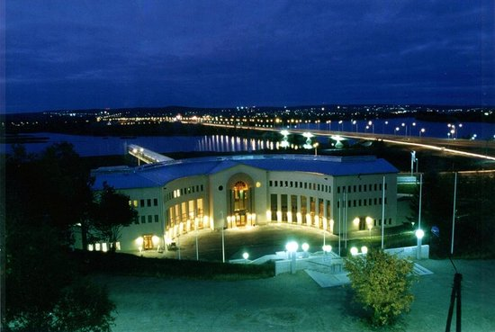

Rovaniemi
Lapp viszonyokhoz képest pezseg az élet a 35 000 lakosú Rovaniemiben. Ide összpontosult a gazdaság, a kereskedelem, a turizmus és a közigazgatás.
A turisták számára Rovaniemi fontos ellátóhely, mert mindenféle felszerelést árúsítanak az itteni üzletek.
Látnivalók
- Napapiirin Porofarmi
A lapp falu rénszarvasfarmján tartják a sarkköri keresztelőt, az Északi-sarkkört átlépők mulatságos keresztelőjét, amit okirattal díjaznak. Utána rénszarvashús kerül az asztalra. - Ounasvaara
A keleten emelkedő dombról jó kilátás nyílik a városra, valamint a Kemijoki (Finnország leghosszabb folyója) és az Ounasjoki egymásba torkollására. Ezenkívül van Ounasvaarában még nyári szánkópálya, a télisportokhoz öt szlalompálya, három sílift és három síugrósánc, valamint 100 km-es sífutó út. - Télapó-műhely
Akit (már) nem érdekel a Télapó, még annak is érdemes körülnéznie itt. A sok giccs mellett egy halo hasznos és értékes kézműipari tárgy is akad (faeszközök, rénszarvasbőrből készült holmik stb.). Lehet, hogy az árucikkek olcsóbbak másutt, de ilyen nagy választékot sehol nem találni.
Múzeumok
- Arktikum
A díjat kapott múzeum átfogó tájékoztatást nyújt az Észak-sarkkörön túli élőhelyről. Bemutatja, hogyan kellett z embereknek Lappföldön minduntalan megküzdeniük a túlélésért, hiszen a természet asztala errefelé sosem volt roskadozó. Különösen fontos szerepet kap a turizmus és a rénszarvastartás. Tudományos központ is kapcsolódik hozzá, ahol azt kutatják, miként befolyásolják a Földön bekövetkező változások a természetet az Északi sarkon. - Lapp Erdészeti Múzeum
A szabadtéri múzeumban favágók kunyhói és az erdészet kezdeti idejéből származó mindenféle eszközök láthatók.

Étkezés
- Oppipoika
Jó, falusi konyha mérsékelt áron, mert vendéglőiskola kapcsolódik hozzá. - Rantasipi Pohjanhovi
Az ínyenceknek való kitűnő étterem az azonos nevű szállodában található.
Szállás
- Matka Borealis
Jó minőségű panzió, közel a központhoz. - Rantasipi Pohjanhovi
Nagyon jól felszerelt szálloda ínyenceknek való étteremmel.
Közeli kirándulás
Auttinköngas
Az Auttinköngas vízesés lebilincselő természeti jelenség: a víz 16 m magasból zúdul alá.
Felvilágosítás:
Városi Turistairoda (tel.: 016/34 62 70)